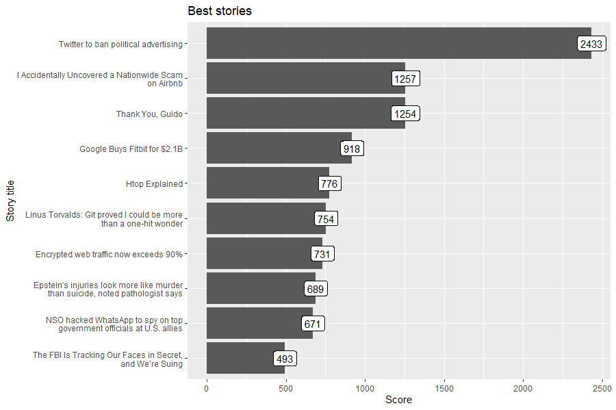
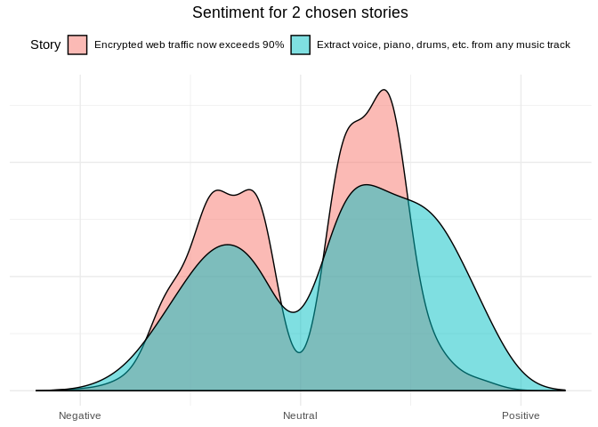

The hackeRnews package is an R wrapper for the Hacker News API. Project for Advanced R classes at the Warsaw University of Technology.
Installation and basic setup
You can install the development version from GitHub with:
The Hacker News API is constructed in such a way that a single item is retrieved with a single request. This means that the retrieval of 200 items requires 200 separate API calls. Processing this amount of requests sequentially takes a significant amount of time. In order to solve this issue the hackeRnews package makes use of the future.apply package (https://github.com/HenrikBengtsson/future.apply) which allows to fetch all of the requested items in parallel. However, this requires some additional setup:
Examples
Identify buzzwords in job offers of Hacker News
This example will show how to get recently used words in job story titles. Words will be visualized using word cloud to show which words were used the most.
library(hackeRnews)
library(tidyverse)
library(tidytext)
library(stringr)
library(dplyr)
library(ggwordcloud)
job_stories <- hackeRnews::get_latest_job_stories()
# get titles, normalize used words, remove non alphabet characters
title_words <- unlist(
lapply(job_stories, FUN=function(job_story) { job_story$title }) %>%
str_replace_all('[^A-Z|a-z]', ' ') %>%
str_to_upper() %>%
str_replace_all('\\s\\s*', ' ') %>%
str_split(' ')
)
# remove stop words
data('stop_words')
df <- data.frame(word=title_words, stringsAsFactors=FALSE) %>%
filter(str_length(word) > 0 & !str_to_lower(word) %in% stop_words$word) %>%
count(word)
# add some random colors to beautify visualization
df <- as.data.frame(df) %>%
mutate(color=factor(sample(10,nrow(df), replace=TRUE)))
word_cloud <- ggplot(df, aes(label=word, size=n, color=color)) +
geom_text_wordcloud() +
scale_size_area(max_size = 15)
Check what’s trending on Hacker News
This example will fetch best stories and plot titles of most recently trending stories.
library(hackeRnews)
library(stringr)
library(ggplot2)
best_stories <- hackeRnews::get_best_stories(max_items=10)
df <- data.frame(
title=unlist(lapply(best_stories, FUN=function(best_story) { str_wrap(best_story$title, 42) })),
score=unlist(lapply(best_stories, FUN=function(best_story) { best_story$score })),
stringsAsFactors=FALSE
)
df$title = factor(df$title, levels=df$title[order(df$score)])
best_stories_plot <- ggplot(df, aes(x = title, y = score, label=score)) +
geom_col() +
geom_label() +
coord_flip() +
xlab('Story title') +
ylab('Score') +
ggtitle('Best stories')
Sentiment analysis on two best stories from Hacker News
library(hackeRnews)
library(tidyverse)
library(tidytext)
library(dplyr)
best_stories <- hackeRnews::get_best_stories(2)
comments_by_story <- lapply(best_stories,
function(story){
get_comments(story)$text
}
)
# normalize used words, remove non alphabet characters
words_by_story <- lapply(comments_by_story,
function(comments){
unlist(
comments %>%
str_replace_all('[^A-Z|a-z]', ' ') %>%
str_to_lower() %>%
str_replace_all('\\s\\s*', ' ') %>%
str_split(' ')
)
}
)
# remove stop words and empty strings
data('stop_words')
dataframes <- lapply(1:length(words_by_story), function(story_id){
data.frame(word=words_by_story[[story_id]], stringsAsFactors=FALSE, story_id=story_id) %>%
filter(!word %in% stop_words$word & word != "")
}
)
df <- bind_rows(dataframes)
# get sentiment for every story
library(textdata)
sentiment <- get_sentiments("afinn")
df %>%
inner_join(sentiment, by='word') %>%
mutate(story_title=sapply(story_id, function(id){best_stories[[id]]$title}) ) %>%
ggplot(aes(x=value, fill=as.factor(story_title))) +
geom_density(alpha=0.5) +
scale_x_continuous(breaks=c(-5, 0, 5),
labels=c("Negative", "Neutral", "Positive"),
limits=c(-6, 6)) +
theme_minimal() +
theme(axis.title.x=element_blank(),
axis.title.y=element_blank(),
axis.text.y=element_blank(),
axis.ticks.y=element_blank(),
plot.title=element_text(hjust=0.5),
legend.position = 'top') +
labs(fill='Story') +
ggtitle('Sentiment for 2 chosen stories')